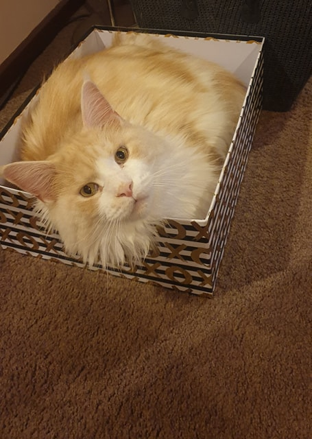

Hi my name is Jason Tilgner. I am a current student at RMIT university attending through open universities Australia.
My RMIT student number is S3830312, and my RMIT email address is S3830312@RMIT.edu.au.
I was born and raised in Australia, and I have lived here my whole adult life.
I got married to my long term partner Ashlee last year in a beautiful garden wedding(no rain or clouds in sky)
I currently live in the area of Gippsland just outside a town called Yallourn North.
For more information https://en.wikipedia.org/wiki/Yallourn_North,_Victoria
I have however managed to have a number of overseas holidays and have family on my mothers side living in New Zealand
It is one of my favourite places to visit. My favourite place to visit in New Zealand is Arrowtown.
English is the main language we speak at home I come from a typical aussie country background
I have completed a certificate two right through to a certificate 4 in information technology done through my local tafe.
Through online learning I have also been completing my education while working in the IT industry, when I first started in the industry, I had no formal qualifications so I have been getting experience but had no formal education.
I have worked in a few different IT companies over a numbers of years this has included IT help desk supporting applications and network support,
IT warehouse / hardware requests for clients needing hardware, and application support. (Supporting Point Of Sale and inhouse custom applications)
In my personal time I enjoy going to the gym and also training in crossfit exercises
I have been training in both for about five years and enjoy how fit it can keep you and then apply this to everyday life.
I also enjoy the people you get to meet on the way and how it groups everyone together.
Finally we have a maine coon cat called tyrion based on the game of thrones character called tyrion.
He is a very large cat and loves to play, jump on things, and have general cat fun.
He also loves it when I run around the house with a ball of string and runs after it, it can be very entertaining.
